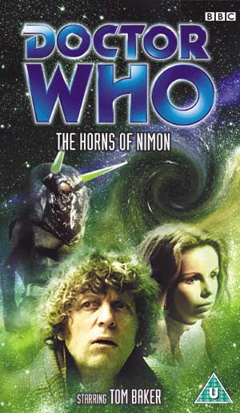
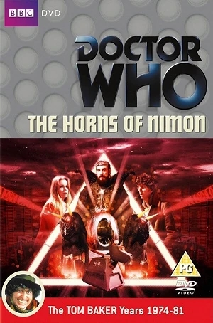
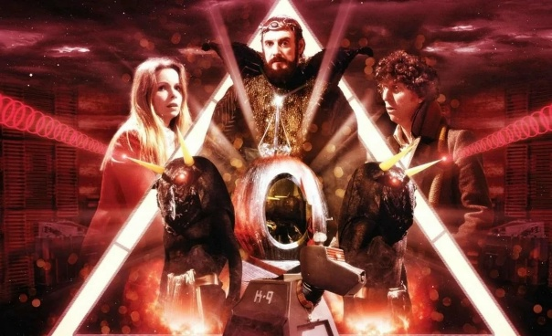
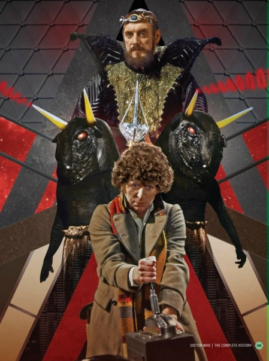

Эра Четвертого Доктора (17 сезон)
<<< НАЗАД ||| 5. Рога Наймона ||| ДАЛЬШЕ >>>
Субтитры: Русские и Английские |  |
|---|---|
с обновлением визуальных эффектов (cunningmunki) Субтитры: отсутствуют | |
The Horns of Nimon
Дата выхода: 22 декабря 1979 - 12 января 1980
Формат: 4 эпизода по 25 мин.
 |  |
ТАРДИС выносит Доктора и Роману на Сконос — планету, некогда великую империю, а ныне тень былого величия. Её властитель Сол Шед теряет хватку, а таинственный Наймон — быкоподобный пришелец, выдающий себя за последнего из своей расы — обещает Сконосу былое могущество в обмен на подношения: молодых людей и кристаллы гиперпространственной связи. На деле Наймон паразитирует на цивилизации, чтобы телепортировать на Сконос своих сородичей и захватить планету. Серия, откровенно вдохновлённая мифом о Тесее и Минотавре, с лабиринтом, жертвоприношениями и монстром в центре. Последний сериал 17-го сезона и финальная серия для продюсера Грэма Уильямса. Любимая фанатами за атмосферу греческого мифа в космосе — и освистанная за дешёвые декорации и непреднамеренный комизм.
 VHS - июнь 2003 |  DVD - 29 марта 2010 |  Blu-ray - 20 декабря 2021 * Версия в нашей группе |
|---|





Трейлер: